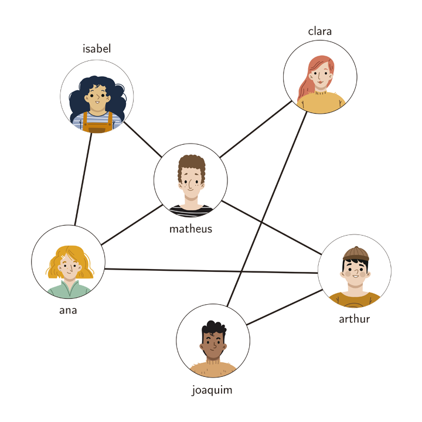
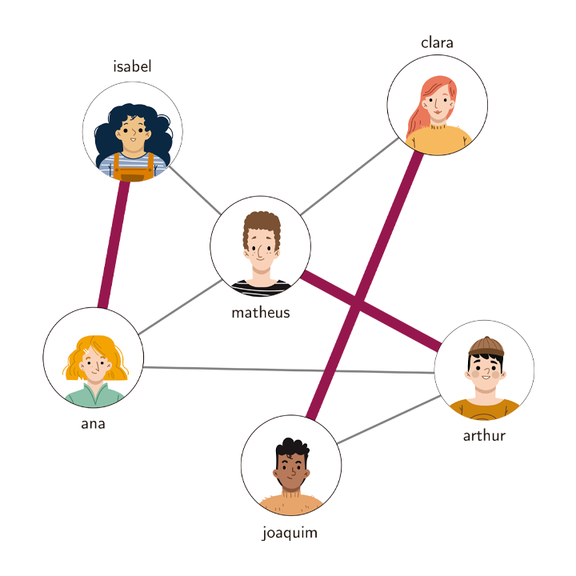
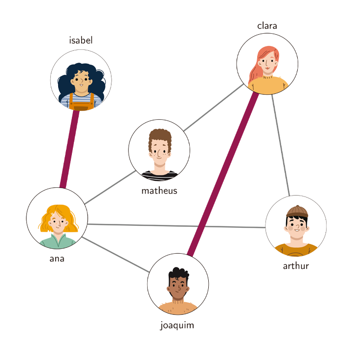
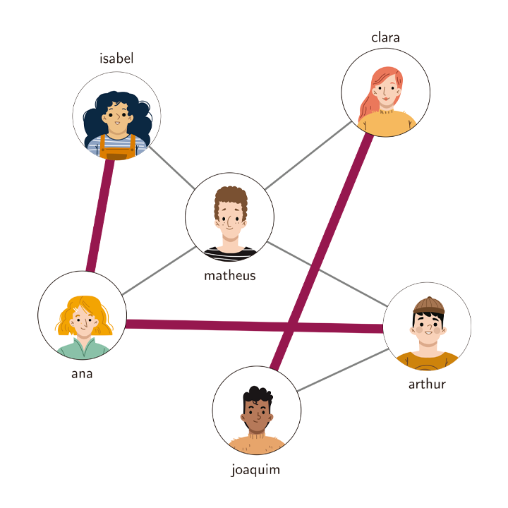

Imagine que você é um professor que vai passar uma atividade em dupla para uma turma. Você não quer que os alunos formem suas duplas sozinhos, mas você também não quer que um aluno fique em dupla com alguém que ele não tem afinidade. Para isso, você pede para cada um dos alunos uma lista dos colegas com quem eles ficariam confortáveis em fazer dupla. Para fins de simplificação, vamos assumir que as preferências são recíprocas.
Considere então o seguinte problema:
Se você possui alguma experiência em algoritmos ou estruturas de dados, você pode ter notado que este é um problema que pode ser modelado com grafos. Por exemplo:

Um grafo representando as afinidades entre uma turma de 6 alunos.
Levando em conta este grafo que representa as afinidades entre os alunos, nós podemos obter as seguintes duplas:

Ana fica em dupla com Isabel, Matheus com Arthur e Joaquim com Clara.
Nós temos 6 alunos e formamos 3 duplas! Se temos $n$ alunos e formamos $\frac{n}{2}$ duplas, é claro que formamos o número máximo de duplas possível. Portanto, o emparelhamento acima é um emparelhamento máximo.
Porém, nem sempre conseguimos formar $\frac{n}{2}$ duplas. Basta mudar um pouco a estrutura do grafo acima e veremos que não será mais possível formar 3 duplas. Veja, por exemplo, o grafo abaixo em que podemos formar apenas 2 duplas.

Poderíamos formar as duplas {Ana e Isabel, Joaquim e Clara}, porém Matheus e Arthur teriam que fazer dupla entre si mesmo sem afinidade entre eles. Veja que qualquer que seja a formação de duplas neste grafo, nunca conseguiremos fazer 3 duplas.
Existe um conceito na área de Teoria dos Grafos que captura exatamente o conceito de "formação de duplas" em um grafo: Emparelhamentos.
Observação: para este texto, consideramos um grafo como sendo uma 2-upla $G = (V, E)$, onde $V(G)$ é o conjunto de vértices e $E(G)$ é o conjunto de arestas do grafo $G$. Vamos também denotar $|V(G)| = n$ e $|E(G)| = m$.
Nos grafos mostrados anteriormente neste texto, temos os Emparelhamentos (1) {{Ana, Isabel}, {Matheus, Arthur}, {Clara, Joaquim}}; e (2) {{Ana, Isabel}, {Joaquim, Clara}}.
Já no grafo seguinte, o conjunto de arestas destacadas não forma um emparelhamento pois as arestas {Ana, Isabel} e {Ana, Arthur} compartilham o vértice Ana. Traduzindo isto para o nosso problema de formação de duplas, vértices compartilhados significariam que em vez de uma dupla, haveria um grupo de três ou mais alunos e não é isso que queremos.

Exemplo de um conjunto de arestas que não é um emparelhamento. Em vez de uma dupla, temos o trio {Ana, Arthur, Isabel}.
Utilizando agora o conceito de Emparelhamentos, podemos abstrair o problema e expressá-lo na forma de um problema equivalente em grafos gerais.
A ideia inicial sempre é a abordagem de força bruta. Para o nosso problema, um possível algoritmo de força bruta seria basicamente verificar todos os subconjuntos de arestas de $G$ em busca do maior que encontrarmos.
max <- -∞
para todo subconjunto S de E(G):
se S é um emparelhamento de G e |S| > max:
max <- |S|
retorne max
Esta abordagem tem complexidade $O(2^mm)$, pois temos $O(2^m)$ subconjuntos de arestas possíveis e para verificar se um conjunto é um emparelhamento levamos $O(m)$.
Porém, nós sabemos que todo emparelhamento possui tamanho no máximo $\frac{n}{2}$ e podemos utilizar esta informação para construir um algoritmo ainda de força bruta, mas com uma complexidade um pouco melhor.
max <- -∞
para todo subconjunto S de E(G) tal que |S| <= n/2:
se S é um emparelhamento de G e |S| > max:
max <- |S|
retorne max
Simplesmente adicionando a restrição ao tamanho do emparelhamento, conseguimos melhorar a complexidade para $O(2^{\frac{n}{2}}m)$. Porém, ainda é exponencial e cientistas da computação não gostam muito de funções exponenciais. Vamos explorar algumas propriedades de emparelhamentos para tentar melhorar nosso algoritmo.
Os conceitos de saturação e insaturação de um vértice são muito úteis para sabermos quais vértices estão "disponíveis" para serem emparelhados.
Site ainda em construção.
Feito com ❤️ por Samuel Santos (2023).